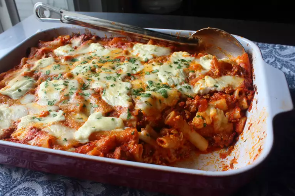

Ziti

Description
This recipe of Baked Ziti or Ziti, is like a lasagna esq dish but with a few differences. For This
recipe, we will be incorporating a single cheese (although you can do multiple) and using ground
meat for the filling. All in all, if you've had or made a lasagna, you'll feel right at home here.
Ingredients
- mozzerella cheese
- rotini pasta noodles
- ground turkey
- tomato sauce
- parsley
- (optional)additional cheese
- Boil the pasta noodles until soft.
- Drain the noodles once done.
- Put the noodles back in the pot, and put tomato sauce on noodles.
- Cook the ground meat of your choice.
- Once done, drain the excess oil from the pan and add tomato sauce to the meat as well.
- Take out a well sized baking pan and add your noodles to it.
- Drizzle tomato sauce over the first layer.
- Add enough ground meat to create a second layer over your sauce and noodles
- Drizzle tomato sauce over the second layer of meat.
- Add a third layer or the rest of your noodles from the pot into the pan
- Drizzle tomato sauce over the third layer of noodles.
- Add the fourth layer or the rest of your meat to the pan.
- Drizzle tomato sauce over the fourth layer of meat.
- Finally, add your cheese to the top layer and toss in the over at 350.
- Let bake for 15 minutes to let the cheese melt
- Take out of oven and enjoy!